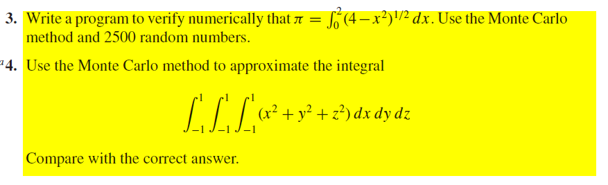
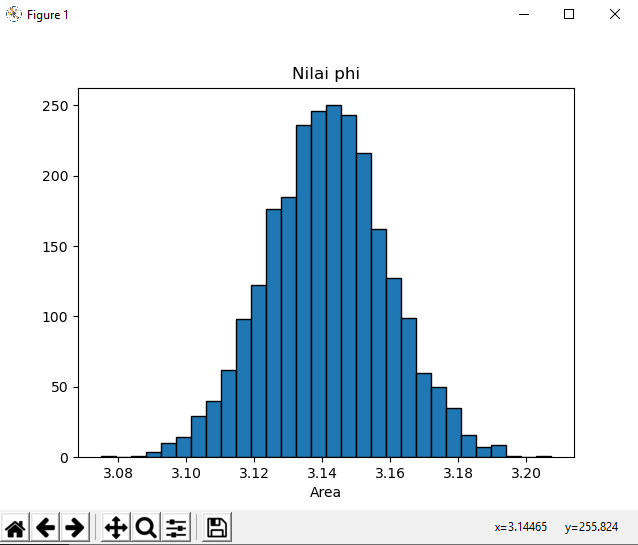
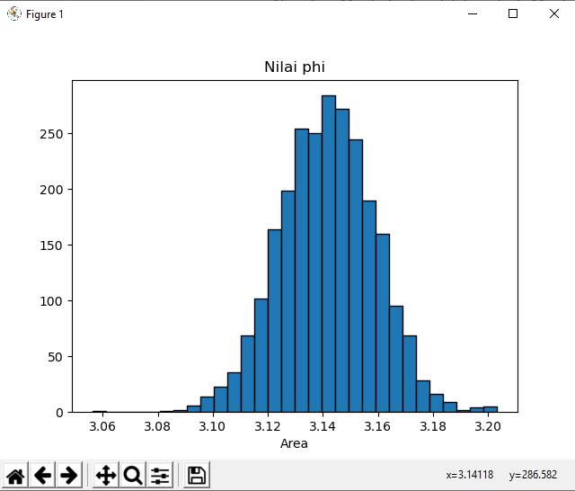
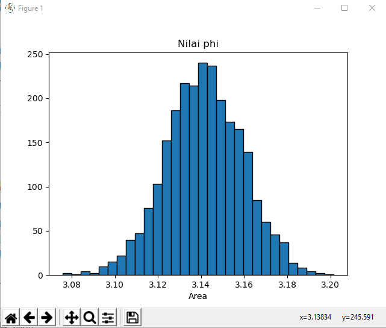
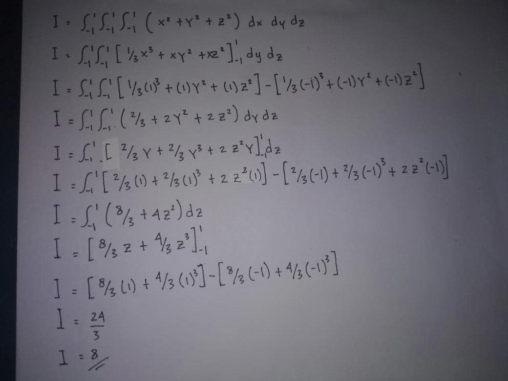

Monte Carlo Method
Metode Monte Carlo digunakan dengan istilah sampling statistik. Penggunaan metode Monte Carlo memerlukan sejumlah besar bilangan acak, dan hal tersebut semakin mudah dengan perkembangan pembangkit bilangan pseudoacak, yang jauh lebih cepat dan praktis dibandingkan dengan metode sebelumnya yang menggunakan tabel bilangan acak untuk sampling statistik.
Metode Monte Carlo adalah algoritme komputasi untuk mensimulasikan berbagai perilaku sistem fisika dan matematika. Penggunaan klasik metode ini adalah untuk mengevaluasi integral definit, terutama integral multidimensi dengan syarat dan batasan yang rumit.
Karena algoritme ini memerlukan pengulangan (repetisi) dan perhitungan yang amat kompleks, metode Monte Carlo pada umumnya dilakukan menggunakan komputer, dan memakai berbagai teknik simulasi komputer.
Algoritme Monte Carlo adalah metode Monte Carlo numerik yang digunakan untuk menemukan solusi problem matematis (yang dapat terdiri dari banyak variabel) yang susah dipecahkan, misalnya dengan kalkulus integral, atau metode numerik lainnya.
Soal

Listing Program 1 Nomer 3
from scipy import random
import numpy as np
import matplotlib.pyplot as plt
a = 0
b = 2
N = 2500
#function for integral
def func(x):
return (4-x**2)**0.5
area = []
for i in range(N):
xrand = np.zeros(N)
for i in range(len(xrand)):
xrand[i] = random.uniform(a,b)
integral = 0.0
for i in range(N):
integral+=func(xrand[i])
jawab = (b-a)/float(N)*integral
area.append(jawab)
plt.title("Nilai phi")
plt.hist(area,bins = 30, ec = 'black')
plt.xlabel("Area")
plt.show()
Percobaan ke-1

Pada percobaan pertama Nilai Phi menunjukkan X=3.14465 y=255.824
Percobaan ke-2

Pada percobaan kedua Nilai Phi menunjukkan x=3.14118 y=286.582
Percobaan ke-3

Pada percobaan ketiga Nilai Phi menunjukkan x=3.13834 y=245.591
Listing Program 2 Nomer 4
from scipy import random #memanggil library random dari scipy
import numpy as np #memanggil library numpy
a = -1
b = 1
N=100
n=3
xrand=np.zeros(N)#dx
yrand=np.zeros(N)#dy
zrand=np.zeros(N)#dz
#fungsi np.zeros mengembalikan array baru dengan bentuk dari tipe yang diberikan, di mana nilai elemen sebagai 0.
integral=0.0
for i in range(n+1):
for i in range(len(xrand)):
xrand[i]=random.uniform(a,b)
for i in range(len(yrand)):
yrand[i]=random.uniform(a,b)
for i in range(len(zrand)):
zrand[i]=random.uniform(a,b)
def func(x,y,z):
return (x**2)+(y**2)+(z**2)
for i in range(N):
integral+=func(xrand[i],yrand[i],zrand[i])
jwb=(b-a)/float(N)*integral
print("Hasil : ",jwb)
Output
#Percobaan 1
C:\Users\User\AppData\Local\Programs\Python\Python37\python.exe "D:/Tugas Kuliah/Semester 4/Komnum/Nomer4.py"
Hasil : 7.985285659898637
Process finished with exit code 0
#Percobaan 2
C:\Users\User\AppData\Local\Programs\Python\Python37\python.exe "D:/Tugas Kuliah/Semester 4/Komnum/Nomer4.py"
Hasil : 8.02539169028922
Process finished with exit code 0
#Percobaan 3
C:\Users\User\AppData\Local\Programs\Python\Python37\python.exe "D:/Tugas Kuliah/Semester 4/Komnum/Nomer4.py"
Hasil : 8.012022095053624
Process finished with exit code 0
Kesimpulannya jika dibandingan dengan perhitungan manual hasil dari itegral dengan metode monte carlo hampir mendekati dan bahkan sama hasilnya.
Hitungan Manual

Sekian Terimakasih